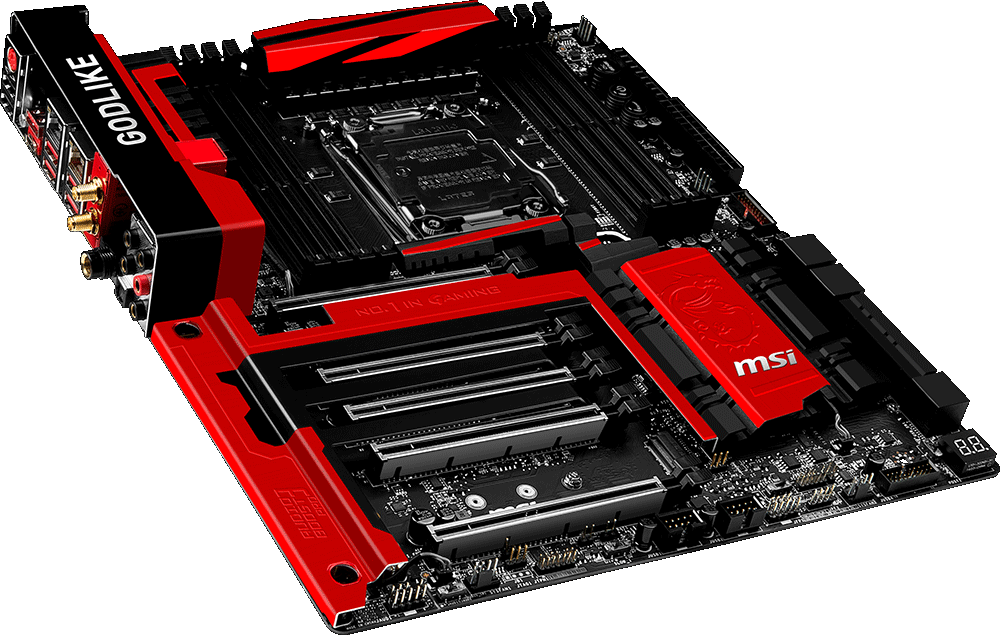

Motherboard

The motherboard is a printed circuit board that is the foundation of a computer, located on the back side or at the bottom of the computer chassis. It allocates power and allows communication to the CPU, RAM, and all other computer hardware components.
Desktop motherboards, cases and power supplies all come in different sizes called form factors. All three must be compatible to work properly together.
Motherboards vary greatly with respect to the types of components they support. For example, each motherboard supports a single type of CPU and a short list of memory types. Additionally, some video cards, hard drives, and other peripherals may not be compatible. The motherboard manufacturer should provide clear guidance on the compatibility of components. So be carefull when you choose your motherboard, choose wisely, don't have any regret!
Graphics Processing Unit
A graphics card is a type of display adapter or video card installed within most computing devices to display graphical data with high clarity, color, definition and overall appearance. A graphics card provides high-quality visual display by processing and executing graphical data using advanced graphical techniques, features and functions. If you are gamer this could arguably be the most important part of your computer, no joke here!
A graphics card is primarily designed to remove the graphical processing tasks from the processor or RAM. It includes a dedicated graphical processing unit (GPU) and a dedicated RAM that help it to process graphical data quickly. Like most processors, a graphics card also has a dedicated heat sink to keep the heat out of the GPU. A graphics card enables the display of 3-D images, image rasterization, higher pixel ration, a broader range of colors and more. Moreover, a graphics card includes various expansion ports such as AGP, HDMI, TV and multiple monitor connectivity. A graphics card can be integrated within the motherboard or be added on as an extension card.
There is two bigs names for in the GPU universe : nVIDIA and AMD. And severals constructors which build them : ZOTAC, ASUS, MSI, GIGABYTE...
Power supply

Often neglected, the power supply must be carefully chosen. In fact, the power supply provides energy for the other components of the computer.
Picking the right power supply is a matter of balance between the power needed by the other components and the energy consumption produced.
If you plan to build a gaming computer you won't need the same power supply than when you build an office computer.
But the raw energy provided is not the only data to be taken into account. The liability, noise produced and efficiency are other important informations. The choice of the power supply must also take into account the size of the computer case. It would be terrible to buy the perfect power supply just to discover during the installation that it doesn't fit into the case!
If you feel like your case will be messy and full of cables, a modular power supply may be the solution. While a classical power supply has one connector to which every other component is connected, a modular power supply is connected individually to every other component.
Hard Disk Drive
A hard disk drive (sometimes abbreviated as Hard drive, HD, or HDD) is a data storage device. He can be used to store any data, including pictures, music, videos, text documents, and any files created or downloaded. Also, hard drives store files for the software programs and operating system that run on the computer.
An internal hard drive is connected to the computer using a data cable (IDE or SATA) that connects to the motherboard and a power cable that connects to the power supply.
They are replaced, increasingly, by electronic memories of type SD card or "disks" SSD (which are much faster).
Case
A Computer chassis, tower, system unit, cabinet, base unit, or simply case is better know as a computer case. He is the outer shell of a computer. So, he contains the components of a computer (usually excluding the display, keyboard and mouse). Its size varies depending on the components it contains.
Cases are usually constructed from steel or aluminium. Plastic is sometimes used, and other materials such as glass and wood.
The main reason for using a computer case is for the protection of components. Dust, animals, toys, liquids (beer...), food, etc. can all damage the internal parts of a computer if the hard shell of a computer case doesn't enclose them and keep them away from the outside environment.